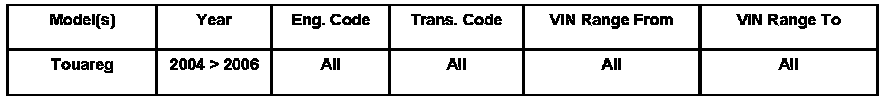
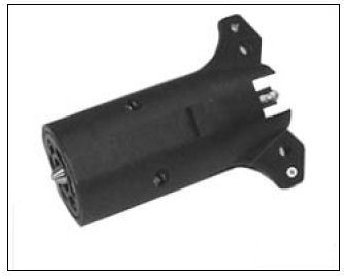
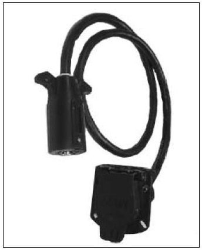
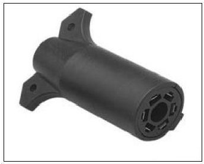
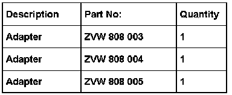

Lighting - Trailer Lights Inoperative/Intermittent
ConditionTrailer Lights Inoperative/Operate Intermittently
Trailer brake lights, turn signals and running/tail lights may be flashing or not function at all. Touareg vehicles equipped with the standard VW trailer hitch and Trailer Control Module may not be able to operate trailer illumination.
VWoA can not ensure that an aftermarket trailer will be equipped with LED lighting elements or a combination of LEDs and incandescent light bulbs.

94 06 15 Oct. 6, 2006, 2011898
Technical Background
The trailer control module 7L0907383G with hardware code HW54 and software SW 088 is the latest version and has a capacity of 100 W.
Production Solution
No production change required.
Service
By using one of the 3 adapters shown, the Control Module is able to recognize the trailer lighting resistance for proper function.
NOTE: Do not modify the adapters since they are designed for the specific adaptations.

Adapter 1: # ZVW 808 003.Is used for 7 to 5 and 7 to 4 adaptations.

Adapter 2: # ZVW 808 004.Is used for all 7 to 7 adaptations.

Adaptor 3: # ZVW 808 005, is used for all 7 to 6 adaptations.
Installation
- Insert adapter piece into the Touareg receptacle and connect the trailer wiring end. Adapter 1, (7-5) is a direct replacement (7-5) and (7-4) pin adapter that has been modified internally (in 7-4 application the last terminal is left unused).
- Adapter 2, (7-7), vehicle side plugs into the vehicle, the male side will get attached (bolted to) the trailer, the existing (original) trailer harness will then plug into the male adapter end that has been bolted to the trailer.
Warranty
Information only.

Required Parts and Tools
Tip:
Part number(s) are for reference only. Always check with your Parts Dept. for the latest part(s) information.